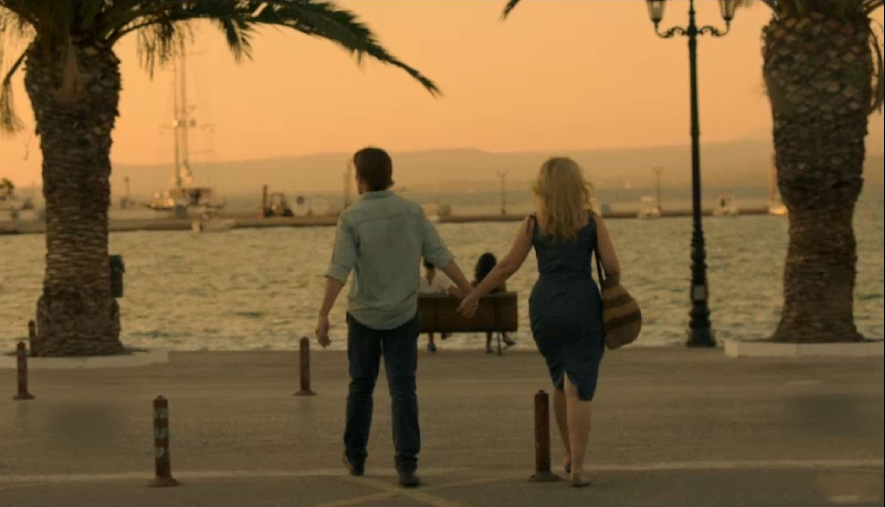

En esta última parte, nos encontramos a un Jessie y a una Celine ya en plena madurez. Finalmente han conseguido estar juntos, que eran lo que siempre habían soñado.
Ya no se respira ese aire de romanticismo juvenil de la primera parte y la melancolía de la segunda. Dando lugar a una madurez absoluta, no solamente en los diálogos, sino también en las acciones que realizan.
Ya no son dos jóvenes perdidamente enamorados. Ahora tienen las obligaciones propias de una persona adulta, como puede ser el trabajo y los hijos.
Ahora no tienen tanto que recordar de aquella noche hace 18 años, salvo en una parte en la que se dan un paseo por la ciudad de Grecia a solas mientras se dirigen a un hotel a pasar la noche.
En este caso querían transmitir lo que significa ser adulto. El arriesgarlo todo por la persona a la que amamos, dejando incluso nuestro trabajo o mudarnos a otra ciudad para estar cerca de él o ella. Normalmente no solemos decir nada porque apreciamos a esa persona y en algún momento podemos llegar a estallar como les pasa a los personajes, dando un tema de discusión o debate serio.
Finalmente Jessie se da cuenta de lo que hizo mal y decide ir a donde está Celine sentada en una terraza para empezar de nuevo. Aquí es donde termina esta maravillosa trilogía, que ha conquistado a tantos corazones, no por su complejas situaciones, sino por la profundidad de los personajes gracias a los diálogos y su psicología, que hace que sientas que te han contado toda una experiencia romántica que va desde el enamoramiento a la madurez de una forma sincera, sin embellecer nada ni ser empalagosa.
